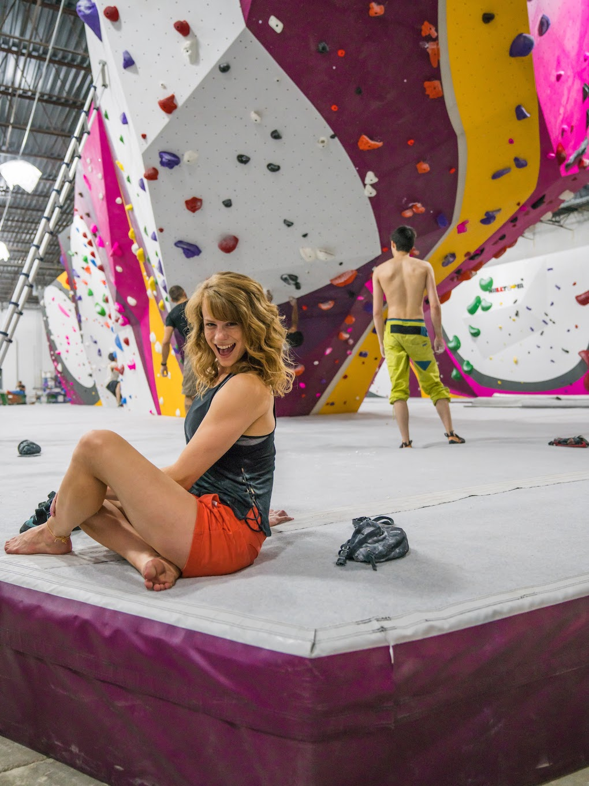
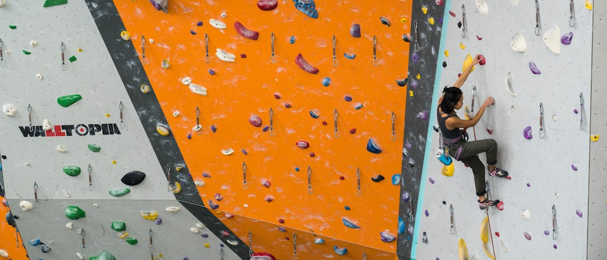
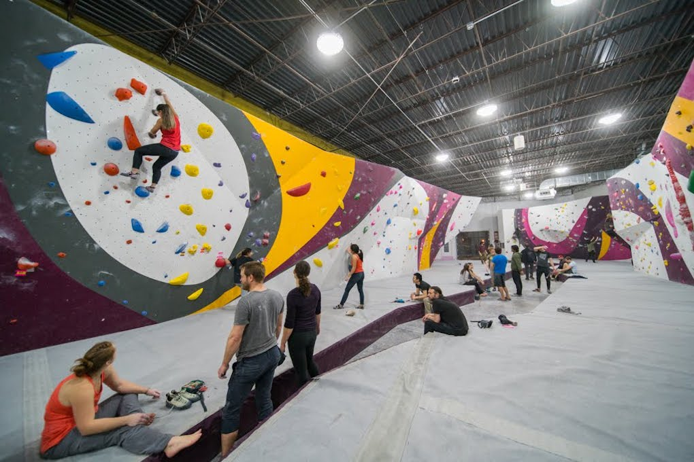
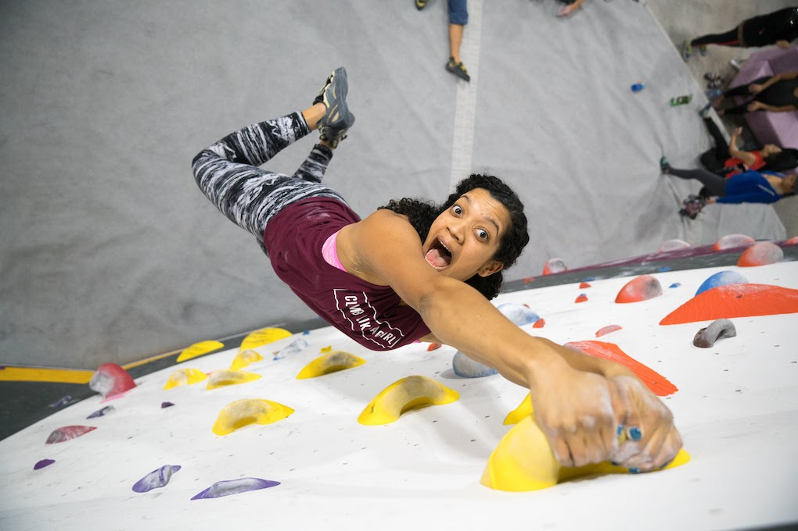
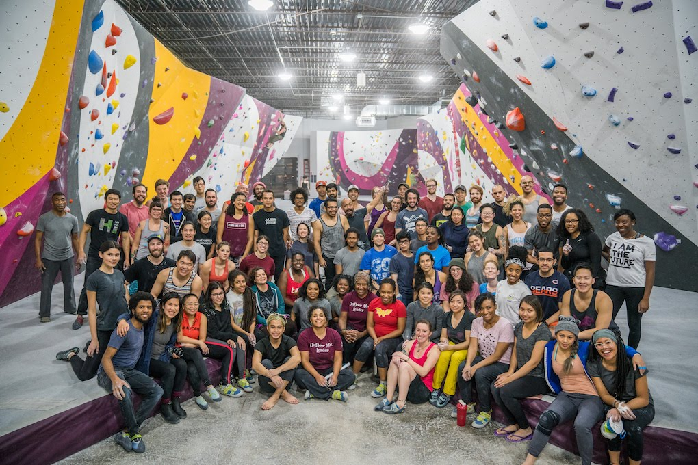
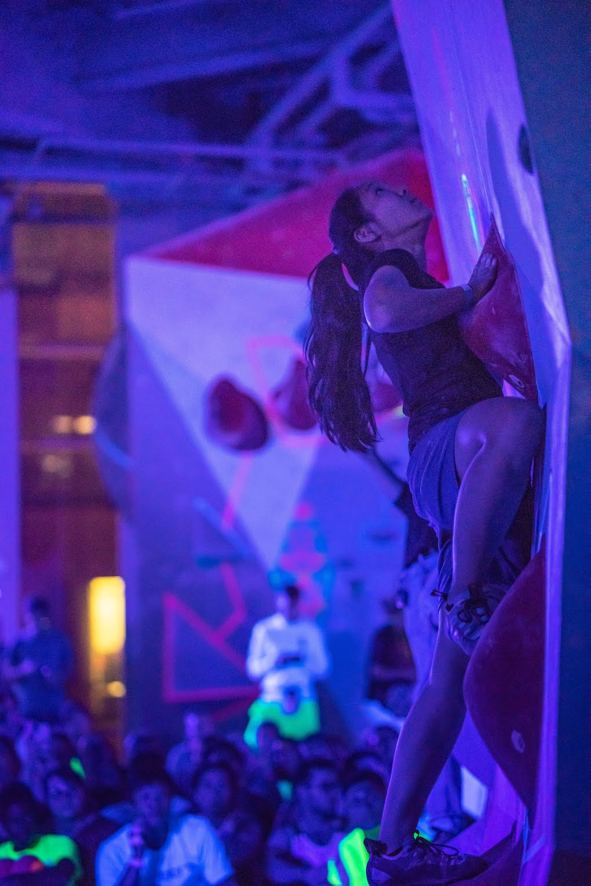

Some shots aren't always the cleanest but the moments count.
First Ascent Humboldt Park

I might be better known for my utrawide/banner ad compositions.
First Ascent Avondale

First Ascent Humboldt Park

Fun Faces
First Ascent Humboldt Park

Group shots are underrated
First Ascent Humboldt Park

Special Event portraits like this low light profile are really only capable with a good camera and editing
First Ascent Block 37

Wide Screen Portraits
First Ascent Avondale